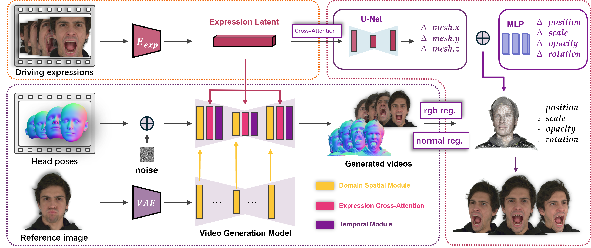

Method Overview
Architecture Diagram: assets/architecture.pngPlease ensure the image is uploaded to the assets folder
Overall architecture. Our system takes a reference image, driving expressions, and head poses as input. Specifically, the reference image is encoded into hierarchical identity embeddings using a pretrained VAE and UNet-based reference network. Driving expressions are compressed into low-dimensional latents via a pose-free expression encoder. Both embeddings are injected into the diffusion model through cross-attention, while head pose maps concatenated with noise serve as inputs. The model then jointly predicts portrait images and surface normals. For 3D reconstruction, a UNet refines FLAME meshes using expression latents through cross-attention, and an MLP captures Gaussian dynamics. Finally, the generated surface normals provide additional geometric supervision that further enhances the reconstruction fidelity.
Our geometry-aware video generation model can simultaneously generate high-fidelity portrait videos and detailed surface normals, supporting reference images with large head poses and driving images with exaggerated expressions.

GeoDiff4D can generate vivid and high-quality 4D head avatars from single reference images, even when the reference exhibits large head pose variations and exaggerated facial expressions, covering a wide range of styles including but not limited to real humans and cartoon characters.


We thank the authors of the following open-source projects for making their code or datasets publicly available: GaussianAvatars, CAP4D, Pixel3DMM, VHAP, NeRSemble, RenderMe-360, and DAViD. We are also grateful to the corresponding authors and participants for their valuable contributions.
Citation information will be available after publication.